Chapter 9 Tree-based Methods
Here we describe tree-based methods of regression and classificaiton.
These involve stratifying or segmenting the predictor space into a number of simple regions.
Since the set of splitting rules used to segment the predictor space can be summarized in a tree, these types of approaches ar known as decision-tree methods.
Pros and Cons
Tree-based methods are simple and useful for interpretation.
However they typically are not competitive with the best supervised learning approaches in terms of prediction accuracy.
Hence we also discuss bagging, random forests, and boosting.
- These methods grow multiple trees which are then combined to yield a single consensus prediction.
Combining a large numnber of trees can often result in dramatic improvements in prediction accuracy, at the expense of some lose interpretation.
9.1 The Basiscs of Decision Trees
Decision trees can be applied to both regression and classification problems.
We first consider regression problems, and then move on to classification.
Baseball salary data: How would you stratify it?
- Salary is color-coded from low (blue, green) to high (yellow, red)
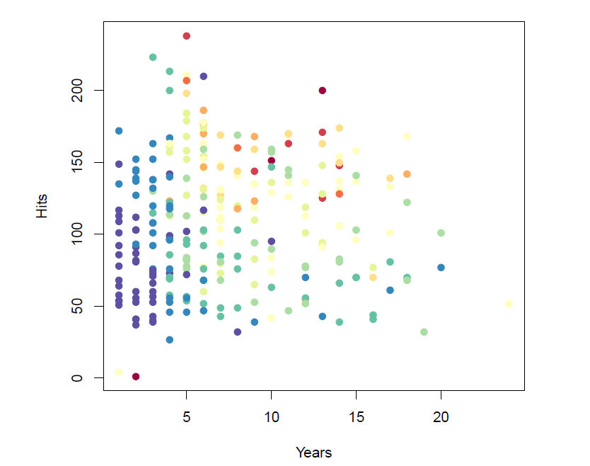
- Decision tree for these data
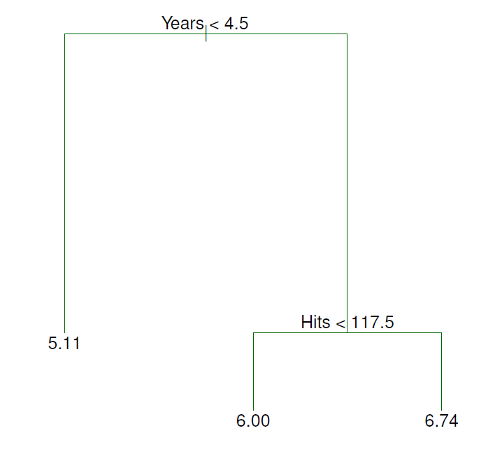 - For the Hitters data, a regression tree for predicting the log salary of a baseball player, based on the number of years that he has played in the major leagues and the number of hits that he made in the previous year.
- At a given internal node, the label (of the form \(X-j<t_k\)) indicates the left-hand branch emanating from that split, and the right-hand branch corresponds to \(X_j\ge t_k\).
- For instance, the split at the top of the tree results in two large branches.
- The left-hand branch corresponds to \(Years<4.5\), and the right-hand branch corresponds to \(Years\ge 4.5\).
- The tree has two internal nodes and three terminal nodes, or leaves.
- The number in each leaf is the mean of the response for the observations that fall there.
- Overall, the tree stratifies or segments the players into three regions of predictor space: \(R_1=\{X|Years<4.5\}\), \(R_2 =\{X|Years\ge 4.5, Hits<117.5\}\), and \(R_3=\{X|Years\ge 4.5, Hits\ge 117.5\}\)
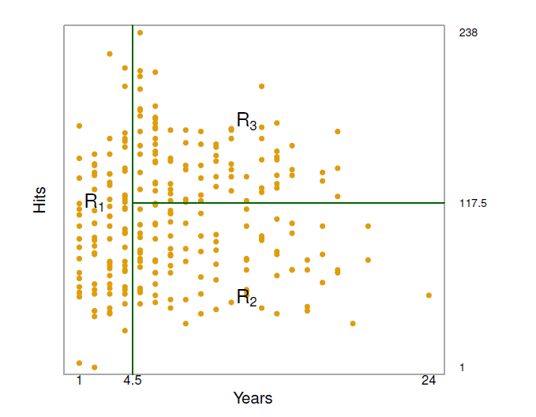
Terminology for trees
In keeping with the tree analogy, the regions \(R_1\), \(R_2\), and \(R_3\) are known as terminal nodes.
Decision trees are typically drawn 8, in the sense that the leaves are at the bottom of the tree.
The points along the tree where the predictor space is split are referred to as internal nodes.
In the hitters tree, the two internal nodes are indicated by the test \(Years<4.5\) and \(Hits<117.5\).
Interpretation of results
Years is the most important factor in determining Salary, and players with less experience earn lower salaries than more experienced players.
Given that a player is less experienced, the number of Hits that he made in the previous year seems to play little role in his Salary.
But among players who have been in the major leagues for five or more years, the number of Hits made in the previous year does affect Salary, and Players who made more Hits last year tend to have higher salaries.
Surely an over-simplification, but compared to a regression model, it is easy to display, interpret and explain.
Tree-building process
We divide the predictor space - that is, the set of possible values for \(X_1, X_2, \ldots, X_p\) - into \(J\) distinct and non-overlapping regions, \(R_1,R_2,\ldots, R_J\).
For every observation that falls into the region \(R_j\), we make the same prediction, which is simply the mean of the response values for the training observations in \(R_j\).
- In theory, the regions could have any shape.
- However, we choose to divide the predictor space into high-dimensional rectangles, or boxes, for simplicity and for case of interpretation of the resulting predictive model.
- The goal is to find boxes \(R_1, \ldots, R_J\) that minimize the RSS, given by
\[ \sum_{j=1}^J\sum_{i\in R_j}(y_i-\hat{y}_{R_j})^2 \]
where \(\hat{y}_{R_j}\) is the mean response for the training observations within the \(j\)th box.
Unfortunately, it is computationally infeasible to consider every possible partition of the feature space into \(J\) boxes.
For this reason, we take a top-down, greedy approach that is known as recursive binary splitting.
The approach is top-down because it begins at the top of the tree and then successively splits the predictor space; each split is indicated via two new branches further down on the tree.
It is greedy because at each step of the tree-building process, the best split is made at that particular step, rather than looking ahead and picking a split that will lead to a better tree in some future step.
We first select the predictor \(X_j\) and the cutpoint \(s\) such that splitting the predictor space into the regions \(\{X|X_j<s\}\) and \(\{X|X_j\ge s\}\) leads to the greatest possible reduction in RSS.
Next, we repeat the process, looking for the best predictor and best cutpoint in order to split the data further so as to minimize the RSS within each of the resulting regions.
However, this time, instead of splitting the entire predictor space, we split one of the two previously identified regions.
- We now have three regions.
Again, we look to split one of these three regions further, so as to minimize the RSS.
- The process continues until a stopping criterion is reached; for instance, we may continue until no region contains more than five observations.
Predictions
- We predict the response for a given test observation using the mean of the training observations in the region to which that test observation belongs.
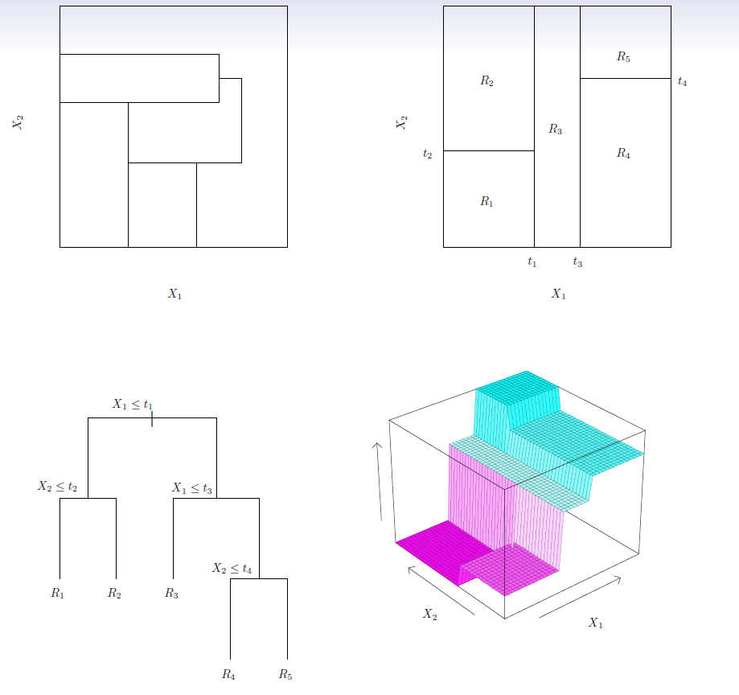
Top left: A partition of two-dimensional feature space that could not result from recursive binary splitting.
Top right: The output of recursive binary splitting on a two-dimensional example.
Bottom left: A tree corresponding to the partition in the top right panel.
Bottom right: A perspective plot of the prediction survace corresponding to that tree.
Pruning a tree
The process described above may produce good predictions on the training set, but is likely to overfit the data, leading to poor test set performance. Why?
A smaller tree with fewer splits (that is, fewer regions \(R_1, \ldots, R_J\)) might lead to lower variance and better interpretation at the cost of a little bias.
One possible alternative to the process described above is to grow the gree only so long as the decrease in the RSS due to each split exceeds some (high) threshold.
This strategy will result in smaller trees, but is too short-sighted: a seemingly worthless split early on in the tree might be followed by a very good split - that is, a split that leads to a large reduction in RSS later on.
A better strategy is to grow a very large tree \(T_0\), and then prune it back in order to obtain a subtree.
Cost complexity pruning - also known as weakest link pruning - is used to do this.
We consider a sequence of trees indexed by a nonnegative tuning parameter \(\alpha\).
- For each value of \(\alpha\) there corresponds a subtree \(T\subset T_0\) such that
\[ \sum_{m=1}^{|T|}\sum_{i:x_i\in R_m} (y_i-\hat{y}_{R_m})^2+\alpha|T| \]
is as small as possible.
- Here \(|T|\) indicates the number of terminal nodes of the tree \(T\), \(R_m\) is the rectanble (i.e. the subset of predictor space) corresponding to the \(m\)th terminal node, and \(\hat{y}_{R_m}\) is the mean of the training observations in \(R_m\).
Choosing the best subtree
The tuning parameter \(\alpha\) controls a trade-off between the subtree’s complexity and its fit to the training data.
We select an optimal value \(\hat{\alpha}\) using corss-validation.
We then return to the full data set and obtain the subtree corresponding to \(\hat{\alpha}\)
Summary: tree algorithm
Use recursive binary splitting to grow a large tree on the training data, stopping only when each terminal node has vewer than some minimum number of observations.
Apply cost complexity pruning to the large tree in order to obtain a sequence of best subtrees, as a function of \(\alpha\).
Use \(K\)-fold cross-validation to choose \(\alpha\). For each \(k=1,\ldots, K\):
3.1 Repeat steps 1 and 2 on the \(\frac{K-1}{K}\)th fraction of the training data, excluding the \(k\)th fold.
3.2 Evaluate the mean squared prediction error on the data in the left-out \(k\)th fold, as a function of \(\alpha\).
Average the results, and pick \(\alpha\) to minimize the average error.
- Return the subtree from Step 2 that corresponds to the chosen value of \(\alpha\).
Bseball example
First, we randomly divided the data set in half, yielding 132 observations in the training set and 131 observations in the test set.
We then built a large regression tree on the training data and varied \(\alpha\) in order to create subtrees with different numbers of terminal nodes.
Finally, we performed six-fold cross-validation in order to estimate the cross-validated MSE of the trees as a function of \(\alpha\).
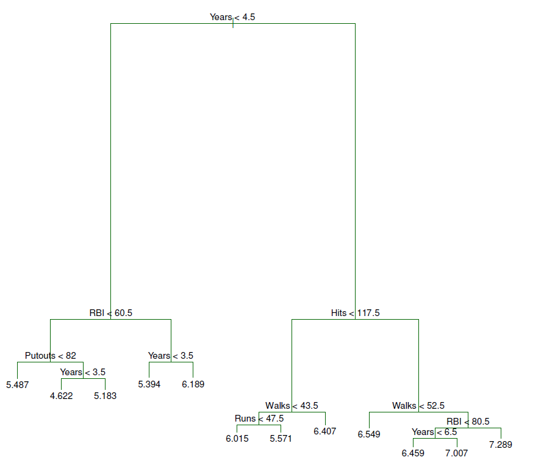
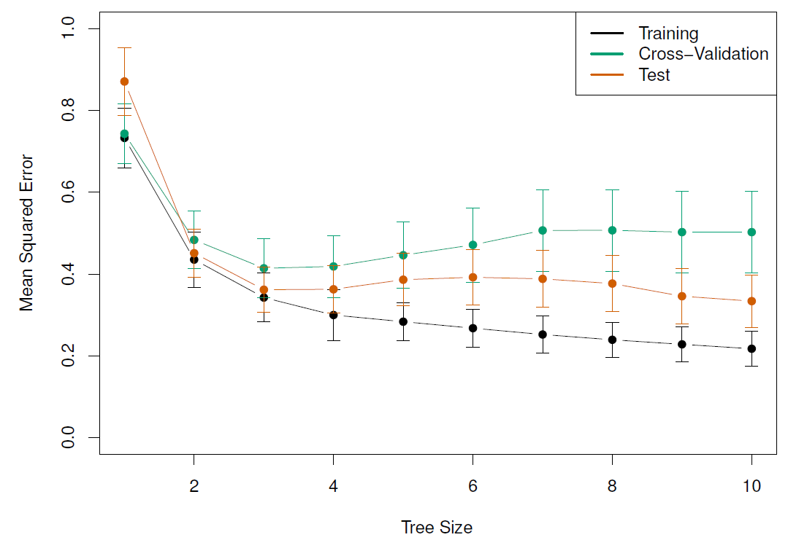
Example
- The initial tree for regression tree of log(Salary) on nine background features.
#install.packages("tree")
library(ISLR2) # load ISLR package
library(tree) # load tree package
Hitters <- na.omit(Hitters) # remove missing values
set.seed(10) # for replication
nrow(Hitters) # n of observations is 263## [1] 263train <- sample(nrow(Hitters), 132) # training sample
tree_salary <- tree(log(Salary) ~ AtBat + Hits + HmRun + Runs
+ RBI + Walks + Years + PutOuts + Assists,
data = Hitters, subset = train) # use nine features for the intial tree
summary(tree_salary) # summary of the results##
## Regression tree:
## tree(formula = log(Salary) ~ AtBat + Hits + HmRun + Runs + RBI +
## Walks + Years + PutOuts + Assists, data = Hitters, subset = train)
## Variables actually used in tree construction:
## [1] "Years" "Hits" "Assists" "RBI"
## Number of terminal nodes: 8
## Residual mean deviance: 0.1884 = 23.36 / 124
## Distribution of residuals:
## Min. 1st Qu. Median Mean 3rd Qu. Max.
## -1.91600 -0.24250 -0.02596 0.00000 0.29310 1.15500- Only 4 out of the initial 9 variables are used in the resulting 8 nodes initial tree, \(T_0\)
par(mfrow = c(1, 1)) # full plot window
plot(tree_salary) # plot the initial tree
title(main = "Initial Regression Tree\nof log(Salary) on Selected Features", cex.main = .8)
text(tree_salary, cex = .8, digits = 3) # add values and splitting points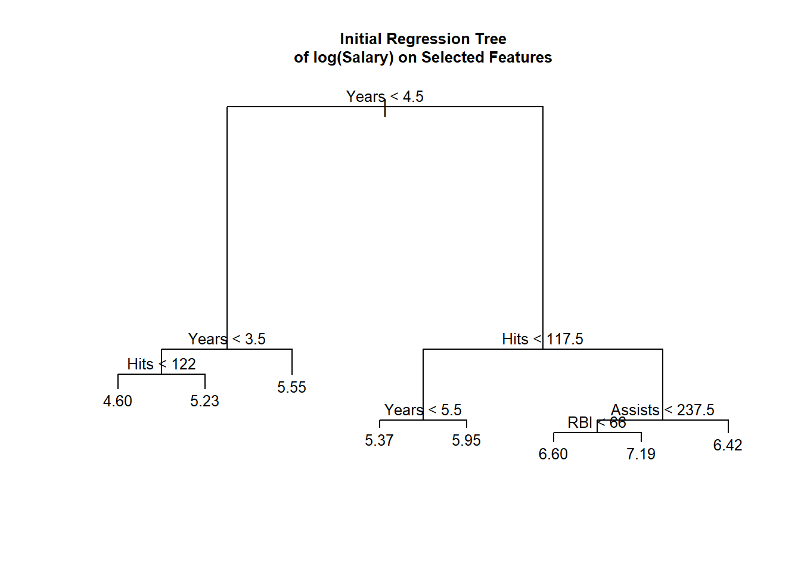
- Cross-validation based results:
set.seed(20) # for replication
cv_salary <- cv.tree(tree_salary, K = 6) # 6 fold cross-validation, 6 divides 132 exactly
par(mfrow = c(1, 2)) # two regions
plot(cv_salary$size, cv_salary$dev, type = "b", xlab = "Tree size", col = "orange",
ylab = "Residaul Sum of Squares",
main = "Cross-Validation RSS for the Test Sample",
cex.main = .8) # size of the model agains RSS
min_pos <- which.min(cv_salary$dev) # position of the smallest CV RSS
cv_salary$size[min_pos] # tree size of the smallest RSS## [1] 6cv_salary$dev[min_pos] # smallest CV RSS## [1] 42.77326points(cv_salary$size[min_pos], cv_salary$dev[min_pos],
col = "red", pch = 20) # mark in the plot
prune_salary <- prune.tree(tree_salary, best = 7) # prune the full tree to the best CV result
summary(prune_salary)##
## Regression tree:
## snip.tree(tree = tree_salary, nodes = 6L)
## Variables actually used in tree construction:
## [1] "Years" "Hits" "Assists" "RBI"
## Number of terminal nodes: 7
## Residual mean deviance: 0.2005 = 25.07 / 125
## Distribution of residuals:
## Min. 1st Qu. Median Mean 3rd Qu. Max.
## -1.91600 -0.20700 -0.01646 0.00000 0.24870 1.15500plot(prune_salary, cex.main = .8)
text(prune_salary, cex = .8, digits = 3)
title(main = "Training Set\nBest Cross-Validation Tree", cex.main = .8)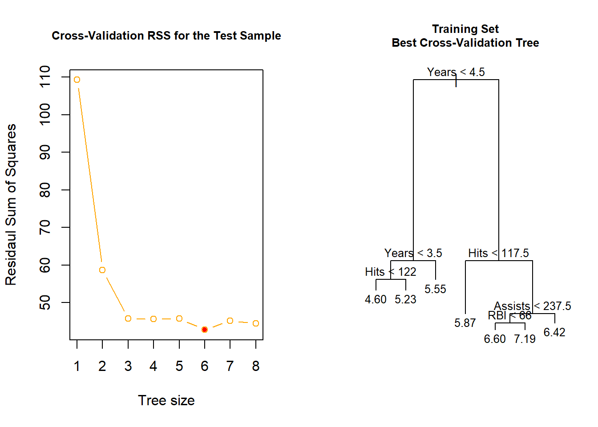
The tree with six nodes has the smallest CV RSS (or deviance).
It is interesting to note that the model predicts higher salary for those with lower
Below are presented test MSEs, cross-validation MSEs, and train sample MSEs for different tree sizes.
We observe that the minimum test MSE is 4 or 5, while as found above the minimum CV MSE is for tree size 6 (factually all are well within the tolerance limits for tree size 3 [or even 2]).
As a results it would be wise to check the performance of tree size 3 also.
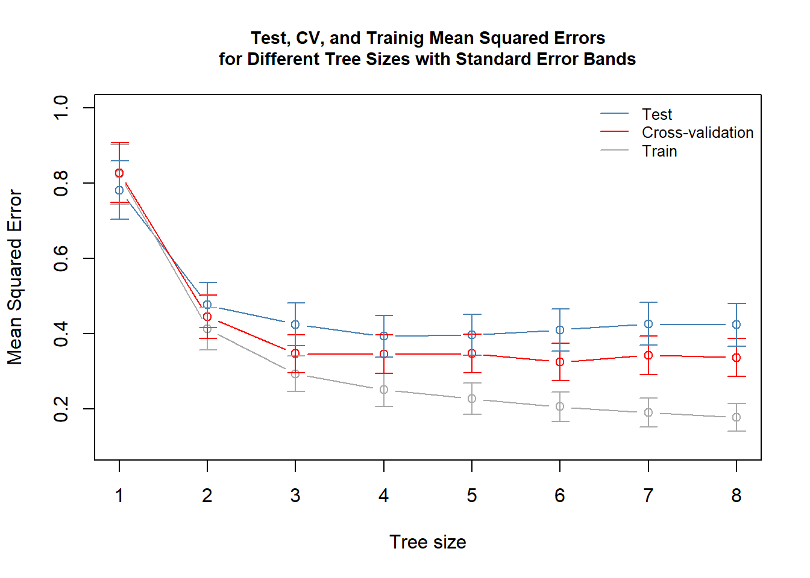
Finally it may be interesting to see how the prediction results compare to linear regression.
Using the training data, we select the best model in terms of the Cp criterion.
library(leaps) # regression subsets
subsets_salary_sum <- summary(subsets_salary <- regsubsets(log(Salary) ~ AtBat + Hits + HmRun
+ Runs + RBI + Walks + Years
+ PutOuts + Assists,
data = Hitters, subset = train))
best_cp <- which.min(subsets_salary_sum$cp) # best model by the CP criterion
(fml <- formula(paste("log(Salary) ~ ", paste(names(coef(subsets_salary, best_cp))[-1],
collapse = "+")))) # formula for lm()## log(Salary) ~ Hits + Walks + Yearslm_train <- lm(fml, data = Hitters, subset = train) # train data regression fit of the best model
summary(lm_train) # results##
## Call:
## lm(formula = fml, data = Hitters, subset = train)
##
## Residuals:
## Min 1Q Median 3Q Max
## -2.12308 -0.39870 0.01469 0.42299 1.29067
##
## Coefficients:
## Estimate Std. Error t value Pr(>|t|)
## (Intercept) 3.982820 0.149021 26.727 < 2e-16 ***
## Hits 0.007128 0.001333 5.348 3.95e-07 ***
## Walks 0.007926 0.003033 2.613 0.0101 *
## Years 0.112590 0.011859 9.494 < 2e-16 ***
## ---
## Signif. codes: 0 '***' 0.001 '**' 0.01 '*' 0.05 '.' 0.1 ' ' 1
##
## Residual standard error: 0.5853 on 128 degrees of freedom
## Multiple R-squared: 0.5968, Adjusted R-squared: 0.5874
## F-statistic: 63.16 on 3 and 128 DF, p-value: < 2.2e-16lm_test <- predict(lm_train, newdata = Hitters[-train, ]) # test set predictions
mean((lm_test - log(Hitters$Salary[-train]))^2) # test MSE## [1] 0.4792482reg_tree_test <- predict(prune_salary, newdata = Hitters[-train, ]) # predictions
mean((reg_tree_test - log(Hitters$Salary[-train]))^2) # reg tree test MSE## [1] 0.4257519- Here the regression tree produces better results in terms of MSE.
9.2 Classification Trees
Very similar to a regression tree, except that it is used to predict a qualitative response rather than a quantitative one.
For a classification tree, we predict that each observation belongs to the most commonly occurring class of training observations in the region to which it belongs.
Just as in the regression setting, we use recursive binary splitting to grow a classification tree.
In the classification setting, RSS cannot be used as criterion for making the binary splits.
A natural alternative to RSS is the classification error rate. This is simply the fraction of the training observations in that region that do not belong to the most common class:
\[ E=1-max_k (\hat{p}_{mk}) \]
Here \(\hat{p}_{mk}\) represents the proportion of training observations in the \(m\)th region that are from the \(k\)th class.
However classification error is not sufficiently sensitive for tree-growing, and in practice two other measures are preferable.
Gini index and Deviance
- The Gini index is defined by
\[ G=\sum_{k=1}^K \hat{p}_{mk}(1-\hat{p}_{mk}) \]
a measure of total variance across the \(K\) classes.
The Gini index takes on a small value if all of the \(\hat{p}_{mk}\)’s are close to zero or one.
For this reason the Gini index is referred to as a measure of node purity - a small value indicates that a node contains predominantly observations from a single class.
An alternative to the Gini index is cross-entropy, given by
\[ D=-\sum_{k=1}^K\hat{p}_{mk}log\hat{p}_{mk} \]
- It turns out that the Gini index and the cross-entropy are very similar numerically.
Example: heart data
These data contain a binary outcome HD for 303 patients who presented with chest pain.
An outcome value of Yes indicates the presence of heart disease based on an angiographic test, while No means no heart disease.
There are 13 predictors including Age, Sex, Chol ( a cholesterol measurement), and other heart and lung function measurements.
Cross-validation yields a tree with six terminal nodes.
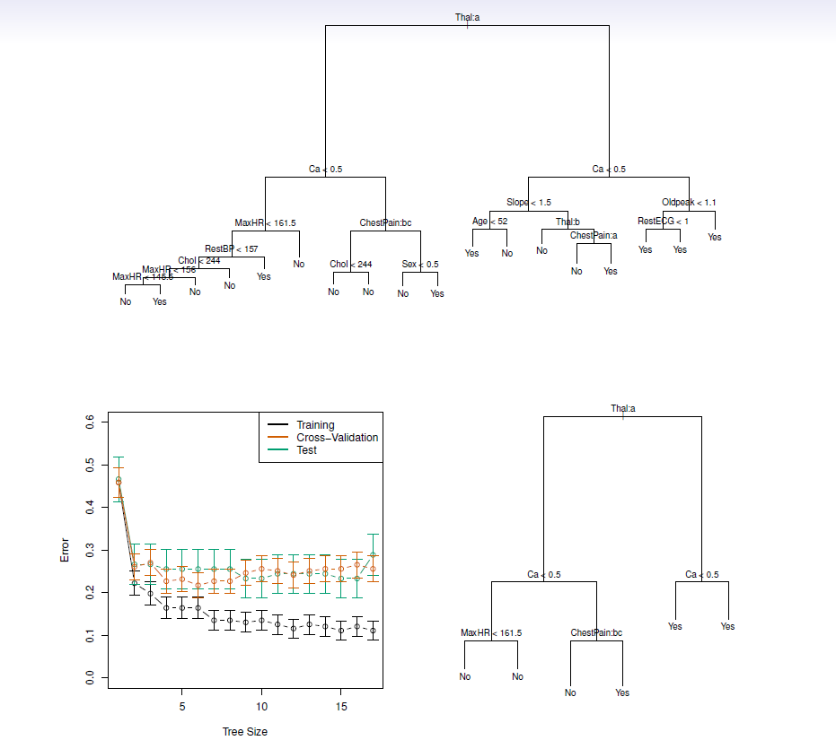
Trees Versus linear models
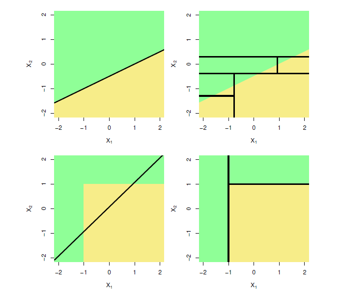
- Top row: true linear boundary
- Bottom row: true non-linear boundary
- Left column: linear model
- Right column: tree-based model
Advantages and Disadvantages of trees
Trees are very easy to explain to people.
- In fact, they are even easier to explain than linear regression!
Some people believe that decision trees more closely mirror human decision-making than do the regression and classification approaches.
Trees can be displayed graphically, and are easily interpreted even by a non-expert (especially if they are small).
Trees can easily handle qualitative predictors without the need to create dummy variables.
Unfortunately, trees generally do not haave the same level of predictive accuracy as some of the other regression and classification approaches.
However, by aggregating many decision trees, the predictive performance of trees can be substantially improved.
9.3 Bagging
Bootstrap aggregation, or bagging, is a general-pirpose procedure for reducing the variance of a statistical learning method; we introduce it here because it is particularly useful and frequently used in the context of decision trees.
Recall that given a set of \(n\) independent observations \(Z_1, \ldots, Z_n\), each with variance \(\sigma^2\), the variance of the mean \(\bar{Z}\) of the observations is given by \(\sigma^2/n\).
In other words, averaging a set of observations reduces variance.
- Of course, this is not practical because we generally do not have access to multiple training sets.
Instead, we can bootstrap, by taking repeated samples from the (single) training data set.
In this approach we generate \(B\) different bootstrapped training data sets.
- We then train our method on the \(b\)th bootstrapped training set in order to get \(\hat{f}^{*b}(x)\), the prediction at a point \(x\).
- We then average all the predictions to obtain
\[ \hat{f}_{bag}(x)=\frac{1}{B}\sum_{b=1}^B \hat{f}^{*b}(x) \]
- This is called bagging.
Bagging classification trees
The above prescription applied to regression trees.
For classification trees: for each test observation, we record the class predicted by each of the \(B\) trees, and take a majority vote: the overall prediction is the most commonly occurring class among the \(B\) predictions.
Bagging the heart data
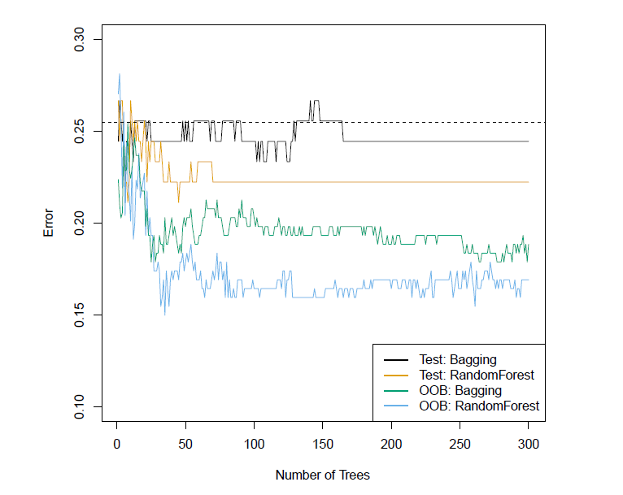
- Bagging and random forest results for the Heart data.
- The test error (black and orange) is shown as a function of \(B\), the number of bootstrapped training sets used.
- Random forests were applied with \(m=\sqrt{p}\).
- The dashed line indicates the test error resulting from a single classification tree.
- The green and blue traces show the OOB error, which in this case is considerably lower.
Out-of-bag error estimation
It turns out that there is a very straightforward way to estimate the test error of a bagged model.
Recall that the key to bagging is that trees are repeatedly fit to bootstrapped subsets of the observations.
- One can show that on average, each bagged tree makes use of around two-thirds of the observations.
The remaining one-third of the observations not used to fit a given bagged tree are referred to as the out-of-bag (OOB) observations.
We can predict the response for the \(i\)th observation using each of the trees in which that observation was OOB.
- This will yield around \(B/3\) predictions for the \(i\)th observation, which we average.
This estimate is essentially the LOO cross-validation error for bagging, if \(B\) is large.
9.4 Random Forests
Random forests provide an improvement over bagged trees by way of a small tweak that decorrelates the trees.
- This reduces the variance when we average the trees.
As in bagging, we build a number of decision trees on bootstrapped training samples.
But when building these decision trees, each time a split in a tree is considered, a random selection of \(m\) predictors is chosen as split candidates from then full set of \(p\) predictors.
- The split is allowed to use only one of those \(m\) predictors.
A fresh selection of \(m\) predictors is taken at each split, and typically we choose \(m\approx \sqrt{p}\) - that is, the number of predictors considered at each split is approximately equal to the square root of the total number of predictors (4 out of the 13 for the Heart data)
Example: gene expression data
We applied random forests to a high-dimensional biological data set consisting of expression measurements of 4,718 genes measured on tissue samples from 349 patients.
There are around 20,000 genes in humans, and individual genes have different levels of activity, or expression, in particular cells, tissues, and biological conditions.
Each of the patient samples has a qualitative label with 15 different levels: either normal or one of 14 different types of cancer.
We use random forests to predict cancer type based on the 500 genes that have the largest variance in the training set.
We randomly divided the observations into a training and a test set, and applied random forests to the training set ofr three different values of the number of splitting variables \(m\).
Result

Results from random forests for the fifteen-class gene expression data set with \(p=500\) predictors.
The test error is displayed as a function of the number of trees.
- Each colored line corresponds to a different value of \(m\), the number of predictors available for splitting at each interior tree node.
Random forests (\(m<p\)) lead to a slight improvement over bagging (\(m=p\)).
- A single classification tree has an error rate of \(45.7\%\).
9.5 Boosting
Like bagging, boosting is a general approach that can be applied to many statistical learning methods for regression or classification.
- We only discuss boosting for decision trees.
Recall that bagging involves creating multiple copies of the original training data set using the bootstrap, fitting a separate decision tree to each copy, and then combining all of the trees in order to create a single predictive model.
Notably, each tree is built on a bootstrap data set, independent of the other trees.
Boosting works in a similar way, except that the trees are grown sequentially: each tree is grown using information from previously grown trees.
Boosting algorithm for regression trees
Set \(\hat{f}(x)=0\) and \(r_i=y_i\) for all \(i\) in the training set.
For \(b=1,2,\ldots, B\), repeat:
2.1 Fit a tree \(\hat{f}^b\) with \(d\) splits (\(d+1\) terminal nodes) to the training data \((X,r)\).
2.2 Update \(\hat{f}\) by adding in a shrunken version of the new tree:
\[ \hat{f}(x) \leftarrow \hat{f}(x) +\lambda \hat{f}^b (x) \]
2.3 Update the residuals,
\[ r_i \leftarrow r_i-\lambda \hat{f}^b (x) \]
- Output the boosted model,
\[ \hat{f}(x)=\sum_{b=1}^B \lambda\hat{f}^b(x) \]
Unlike fitting a single large decision tree to the data, which amounts to fitting the data hard and potentially overfitting, the boosting approach instead learns slowly.
Given the current model, we fit a decision tree to the residuals from the model.
- We then add this new decision tree into the fitted functio nin order to update the residuals.
Each of thses trees can be rather small, with just a few terminal nodes, determined by the parameter \(d\) in the algorithm.
By fitting small trees to the residuals, we slowly improve \(\hat{f}\) in areas where it does not perform well.
- The shrinkage parameter \(\lambda\) slows the process down even further, allowing more and different shaped treees to attack the residuals.
Boosting for classification
Boosting for classification is similar in spirit to boosting for regression, but is a bit more complex.
The R package gbm (gradient boosted models) handles a variety of regression and classification problems.
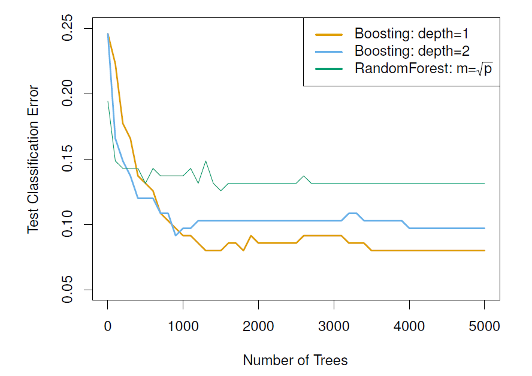
Results from performing boosting and random forests on the fifteen-class gene expression data set in order to predict cancer versus normal.
The test error is displayed as a function of the number of trees.
- For the two boosted models, \(\lambda=0.01\).
- Depth-1 trees slightly outperform depth-2 trees, and both outperform the random forest, although the standard errors are around \(0.02\), making none of these differences significant.
The test error rate for a single tree is \(24\%\).
Tuning parameters for boosting
The number of trees \(B\). Unlike bagging and random forests, boosting can overfit if \(B\) is too large, although this overfitting tends to occur slowly if at all. We use cross-validation to select \(B\).
The shrinkage parameter \(\lambda\), a small positive number. This controls the rate at which boosting learns. Typical values are \(0.01\) or \(0.001\), and the right choice can depend on the problem. Very small \(\lambda\) can require using a very large value of \(B\) in order to achieve good performance.
The number of splits \(d\) in each tree, which controls the complexity of the boosted ensemble. Often \(d=1\) works well, in which case each tree is a stump, consisting of a single split and resulting in an additive model. More generally \(d\) is the interaction depth, and controls the interaction order of the boosted model, since \(d\) splits can involve at most \(d\) variables.
- Another regression example
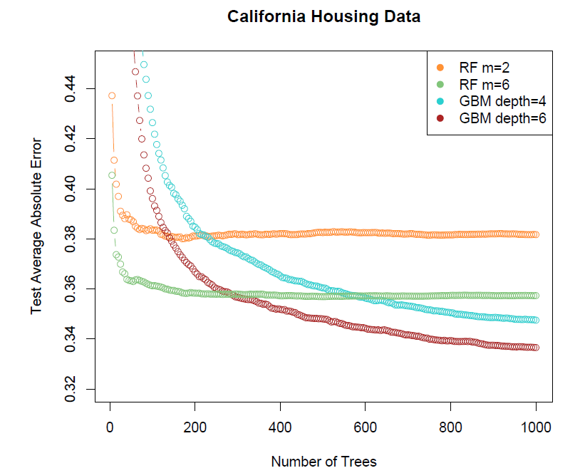
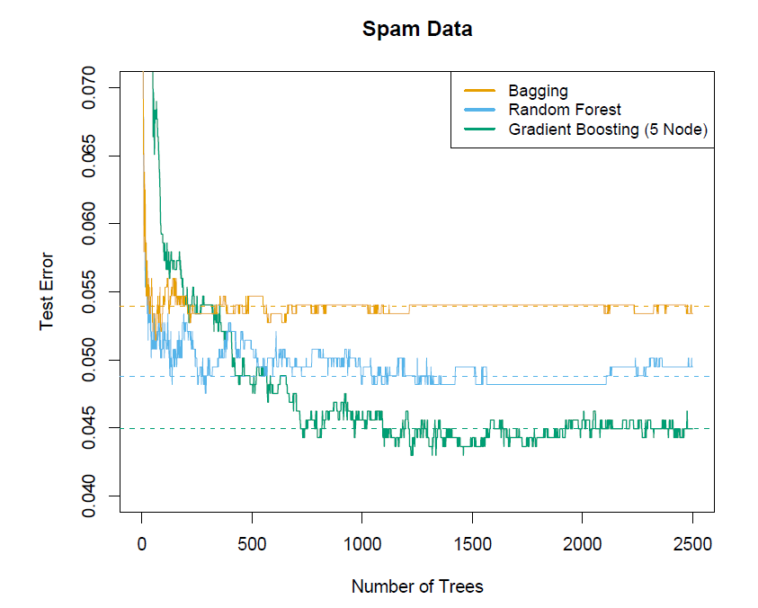
Variable importance measure
- For bagged/RF regression trees, we record the total amount that the RSS is decreased due to splits over a given predictor, averaged over all \(B\) trees.
- A large value indicates an important predictor.
- Similarly, for bagged/RF classification trees, we add up the total amount that the Gini index is decreased by splits over a given predictor, averaged over all \(B\) trees.
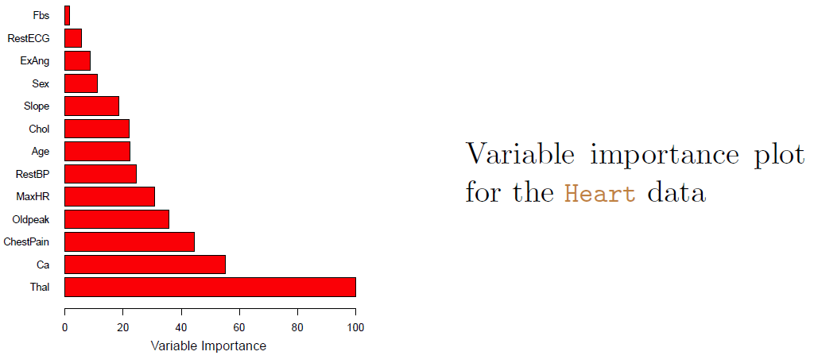
Summary
Decision trees are simple and interpretable models for regression and classification.
However they are often not competitive with other methods in terms of prediction accuracy.
Bagging, random forests and boosting are good methods for improving the prediction accuracy of trees.
- They work by growing many trees on the training data and then combining the predictions of the resulting ensemble of trees.
The latter two methods - random forests and boosting - are among the state-of-the-art methods for supervised learning.
- However their results can be difficult to interpret.
Example
The R package randomForest can be used for bagging and random forest (random forest is bagging when \(m=p\)).
Housing prices in Boston (data set in MASS library).
library(MASS) # MASS library include Boston data##
## 다음의 패키지를 부착합니다: 'MASS'## The following object is masked from 'package:ISLR2':
##
## Bostonlibrary(randomForest)## randomForest 4.7-1.1## Type rfNews() to see new features/changes/bug fixes.#library(help = randomForest)
set.seed(1) #for replication
colnames(Boston) # variables in Boston## [1] "crim" "zn" "indus" "chas" "nox" "rm" "age"
## [8] "dis" "rad" "tax" "ptratio" "black" "lstat" "medv"train <- sample(nrow(Boston), nrow(Boston) / 2) # training sample
bag.boston <- randomForest(medv ~ ., data = Boston, subset = train,
mtry = 13, # force all variables, which implie bagging
importance = TRUE)
bag.boston # print results##
## Call:
## randomForest(formula = medv ~ ., data = Boston, mtry = 13, importance = TRUE, subset = train)
## Type of random forest: regression
## Number of trees: 500
## No. of variables tried at each split: 13
##
## Mean of squared residuals: 11.33119
## % Var explained: 85.26yhat.bag <- predict(bag.boston, newdata = Boston[-train, ]) # predictions
plot(yhat.bag, Boston$medv[-train], xlim = c(0, 50), ylim = c(0, 50),
xlab = "Predicted Housing Prices",
ylab = "Realized Housing Prices", pch = 20, col = "orange") # scatter plot
abline(0, 1, col = "grey", lty = "dashed")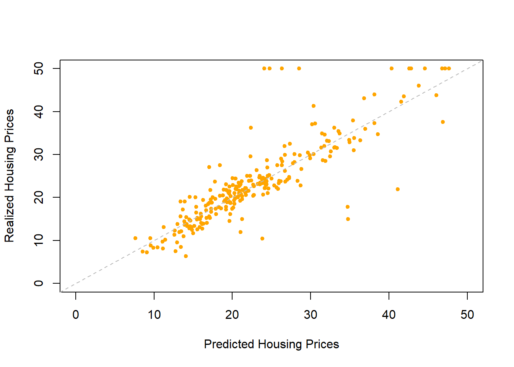
round(mean((yhat.bag - Boston$medv[-train])^2), 2) # MSE## [1] 23.46- Fit next random forest with \(m=6\) (R default is \(p/3\) for regression trees and \(\sqrt{p}\) for classification trees).
set.seed(1)
rf.boston <- randomForest(medv ~ ., data = Boston, subset = train,
mtry = 6, imprtance = TRUE)
yhat.rf <- predict(rf.boston, newdata = Boston[-train, ])
round(mean((yhat.rf - Boston$medv[-train])^2), 2) # MSE## [1] 19.48round(importance(rf.boston), 2) # importance of predictors## IncNodePurity
## crim 1000.86
## zn 114.67
## indus 651.89
## chas 57.05
## nox 708.44
## rm 7836.65
## age 649.43
## dis 723.22
## rad 80.62
## tax 358.12
## ptratio 835.19
## black 267.00
## lstat 5997.96varImpPlot(rf.boston, main = "Variable Importance") # plor of importance measure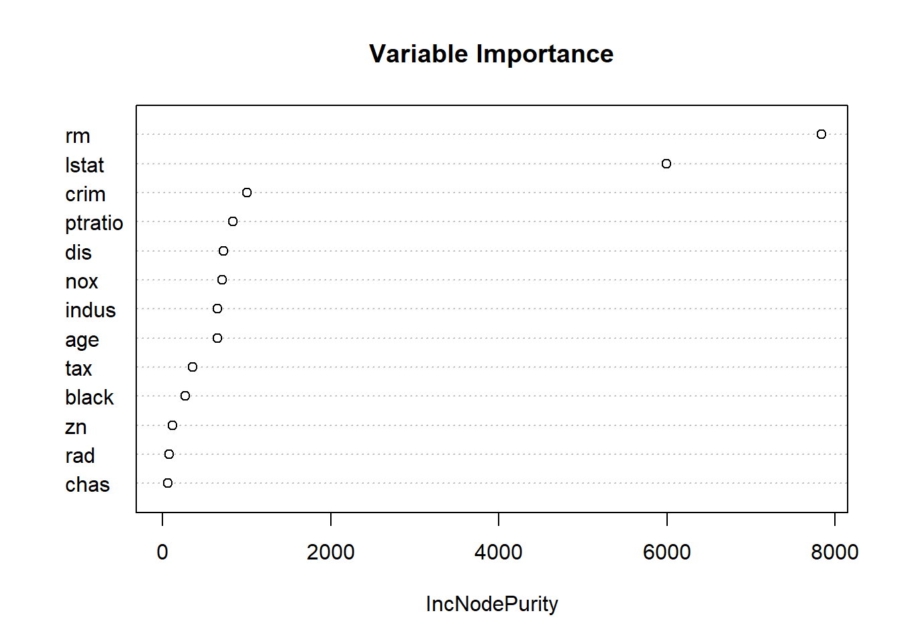
- Boosted regression trees can be fitted by gbm package using gbm() function.
summary(boost.boston)
## var rel.inf
## rm rm 43.9919329
## lstat lstat 33.1216941
## crim crim 4.2604167
## dis dis 4.0111090
## nox nox 3.4353017
## black black 2.8267554
## age age 2.6113938
## ptratio ptratio 2.5403035
## tax tax 1.4565654
## indus indus 0.8008740
## rad rad 0.6546400
## zn zn 0.1446149
## chas chas 0.1443986## prediction performance
yhat.boost <- predict(boost.boston, newdata = Boston[-train, ], n.trees = 5000)
mean((yhat.boost - Boston$medv[-train])^2)## [1] 18.84709- Thus, here boosting with test \(MSE = 11.19\) outperforms both bagging (test \(MSE = 22.74\)) and random forest (test \(MSE = 21.89\)).